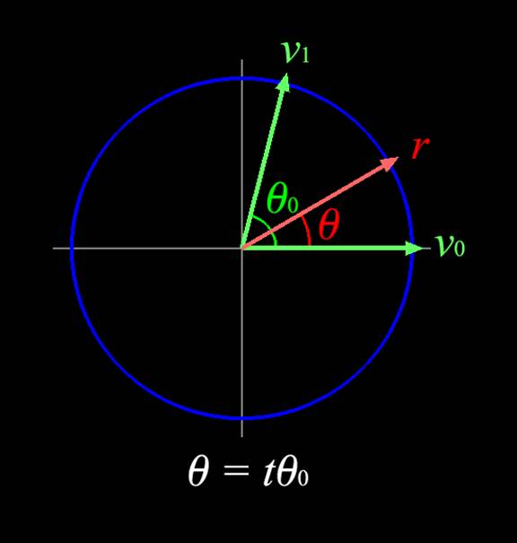
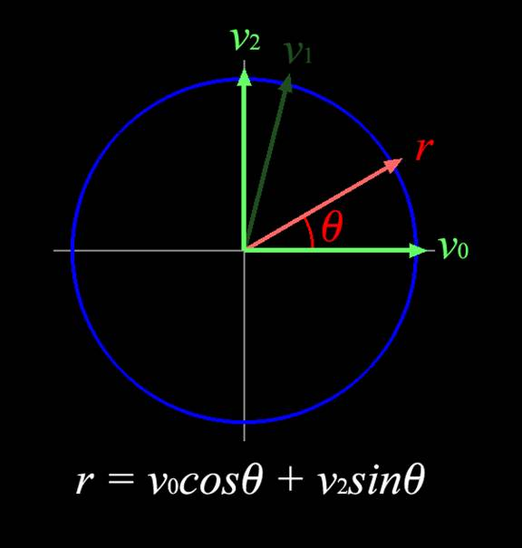

Understanding Slerp, Then Not Using It
Recall that rotations can be represented by unit vectors in 4-dimensional space that also have an algebraic structure. These 4-vectors are known as the quaternions, and they’re especially useful for rotation interpolation problems, of the sort required by animation and inverse kinematics systems.
There are an infinite number of paths that transition from rotation A to rotation B, but in general there’s only one “straightest” way to get there, known as the torque-minimal path. Since this path travels along the surface of the 4-sphere, it is inherently curved. The function slerp walks along this path at a constant speed; slerp was popularized in the computer graphics industry by Shoemake (see References).
Despite quaternions being very important things, few game programmers understand how they work, the slerp function being an especially mysterious black box. (Shoemake does not present a derivation in his paper; he just gives the formula). Certainly you can derive slerp by considering the geometry of a sphere in 4D space, but such spheres are difficult to visualize. So I’d like to present a derivation of slerp that works differently.
Slerp solutions are coplanar
The inputs to slerp are two quaternions, q0 and q1, as well as a scalar parameter t that tells us how far to interpolate between these. (t = 0 gives us q0, t = 1 gives us q1, and intermediate values of t give us quaternions on the path between q0 and q1).
The first useful thing to realize is that all results from the slerp must lie in the plane P defined by q0, q1 and the origin. I won’t present formal proof here, because I want to get to the meat of the article. So I will make a hand-wavy argument; for a more formal explanation, see Genevieve Walsh’s paper, section 1.1 titled “Geodesics in the three-sphere”.
Because the hypersphere is symmetric in all directions about the origin, we can reflect it across any plane that passes through the origin, producing an equivalent hypersphere. We reflect the sphere across P; because P contains q0 and q1, q0 and q1 stay in the same places; because the rest of the sphere was mapped to itself, the geometry is the same, so the shortest path did not change. But since every point not contained within P was moved by the reflection, we know the path must be contained in P. (I have assumed here that there is only one shortest path, which is implicit in the idea of constructing a well-formed slerp function; but you can read about geodesics if you want to dig deeper into this subject.)
If this handwaving argument was confusing, you can just take it for granted that slerp always generates great circles of the hypersphere, and great circles are always coplanar (since they are circles!)
How this co-planarity helps
Once we believe the results of slerp are all coplanar, the situation is still somewhat confusing since that plane P is oriented arbitrarily in 4-dimensional space. But we can employ a simplifying strategy – suppose we build a transform that moves P from its arbitrary orientation onto the familiar XY plane. We can solve the interpolation problem in 2D space, then transform the result back to the arbitrary orientation in 4D.
Such a transformation could be represented by a 4x4 matrix. However, it would take extra CPU to compute and apply the transformation. Luckily for us, this transformation is unnecessary. If we feel like we need it, that’s because we are overly attached to our coordinate systems. When we adopt a Zen-like detachment from the idea of coordinates, we find that the problem is simplified.
Linear objects, like vectors and planes, exist independently from the methods we use to represent them (i.e. coordinate systems). These objects always obey the properties of linear algebra. Thus we can derive formulas directly from these linear properties, without ever mentioning coordinates – in the literature this is called a coordinate-free derivation. Formulas with coordinate-free derivations are very powerful; they must be true in all linear spaces, regardless of petty details like the total number of dimensions in the space. (Except perhaps for infinite-dimensional spaces. Those are tricky and we should take great care when venturing into them, hic sunt dracones and all that.)
If you’re not used to thinking in a coordinate-free way, Sheldon Axler’s book Linear Algebra Done Right is a good start (see References). For now I will show a coordinate-free derivation of slerp using 2-dimensional illustrations (which are all you need!).
Coordinate-free derivation of slerp
Our inputs are two unit vectors, v0 and v1, and a scalar t. We are solving for a vector r whose angle with v0 is θ = t θ0, where θ0 is the angle between v0 and v1.
Figure 1 illustrates the problem. I have drawn v0 in the direction we usually use for the X axis when drawing the XY plane. This by itself suggests a solution. If we had some vector v2 that was orthogonal to v0, as the Y axis is to the X, then our solution r = v0cosθ + v2sinθ.
Assume our input v1 is linearly independent from v0. (If it isn’t, then the entire slerp problem is ill-formed; robust implementations of slerp contain a preamble to handle this case). Since v0 and v1 are independent, we can orthonormalize v1 against v0 to yield v2; see Figure 2. That’s it, we’re basically done! The rest is implementation details, like finding θ0 from v0 and v1. Listing 1 contains pseudocode for the whole function. That’s slerp; slerp is not some scary 4-dimensional thing. Listing 2 contains actual C++ source code. Though this code is written specifically for some type called a Quaternion, it is valid for vectors represented in an arbitrary number of dimensions; so if you have some dynamic n-dimensional vector class, you can just plug in the same source code. (Perhaps you want to interpolate surface normals on the unit sphere in R3).
|  |  |
| Figure 1: We want to find the vector r that is at angle θ from v0. | Figure 2: Using v1, we build the orthonormal basis {v0, v2}, which allows us to easily compute r. |
Suppose we were not trying to be coordinate-free, and just wanted to solve slerp in the XY plane. Then finding v2 is even easier; we can just say v2 = v0┴, that is, v2x = -v0y, v2y = v0x. But if we then try and raise the problem to higher dimensions, we don’t know what to do with this operator ┴. It assumes we are living in XY coordinates, which is a relatively weak stance for an operator to take.
There’s a cosmetic difference between this slerp and the Shoemake code. Where I use a Normalize function, Shoemake divides by sinθ0. Indeed this has the same effect as a Normalize; some trig will tell you that the length of v2 prior to normalization is sinθ0, so the divide turns it back into a unit vector. I like to use the explicit Normalize, though, because it emphasizes the vector nature of the computation. As to which method is faster, that’s unclear, as it depends heavily on the target hardware. But you shouldn’t care, because if you’re calling slerp in the first place, you are already in for a world of slowness; small deviations in that slowness are not going to matter much.
In fact, game programmers should be using slerp a lot less often than they do. I think it’s an important function to understand – hence this article! – but a deep understanding of the function implies that you know when not to use it, which is most of the time.
| Listing 1: Pseudocode for slerp | Listing 2: C++ code for slerp |
|---|---|
|
Inputs are: unit vectors v0 and v1, scalar t
v0 and v1 are linearly independent Let θ0 = acos(v0 · v1) Let θ = tθ0 Let v2 = Normalize(v1 - (v0 · v1)v0) return v0cosθ + v2sinθ |
|
Alternatives to slerp
As discussed in the paper by Muratori and Bloom (see References), there are 3 basic properties we often want when interpolating rotations: commutativity, constant velocity, and minimal torque. Unfortunately, it seems impossible to get all three at once. There are three major methods of quaternion interpolation, and each of those methods gives you two of the three desirable properties. The choices are: quaternion slerp (popularized by Ken Shoemake), normalized quaternion lerp (which I will call nlerp from now on; also discussed in the Shoemake paper but not considered important there; popularized by Casey Muratori, and some of us consider it very important in games now), and log-quaternion lerp (also known as exponential map interpolation; see the paper by Grassia). See Table 1 for a handy summary of the properties of each interpolation method.
| commutative | constant velocity | torque-minimal | |
|---|---|---|---|
| quaternion slerp | No! | Yes | Yes |
| quaternion nlerp | Yes | No! | Yes |
| log-quaternion lerp | Yes | Yes | No! |
Currently, slerp is considered by most to be the authoritative method for rotation interpolation. This is because most programmers don’t understand slerp, much less the alternatives; they just hear from other people that slerp is the right thing to do, then they paste the Shoemake routines into their source code. Shoemake presented the concept well and his paper was very helpful and relevant. But as Table 1 clearly suggests, we have several available solutions and we can choose the one that fits our problem best.
Right now there are a few major tasks in games for which we use rotation interpolation; mainly they involve animation interpolation and inverse kinematics. (Camera control, for example, can be viewed as a sub-problem of these.)
When building animation systems, programmers often use slerp to generate rotations in between keyframes, then attempt to optimize the slerp function so that the animation system runs faster. For examples of slerp optimizations, see the Inner Product article “Hacking Quaternions” (March 2002) or Thomas Busser’s feature on PolySlerp (February 2004). Generally these optimized slerps are slower and harder to understand than the normalized linear interpolation. We should only be using them if we really need our rotations to interpolate at constant velocity.
But as Casey clearly pointed out to me, continuity and runtime efficiency are the most important issues for an in-game animation engine, and nlerp delivers these the best. It’s easy to get caught up in the idea that slerp is the “right answer” and to worry about nlerp’s nonconstant velocity, but in reality the issue is unimportant. Slerp is not the “right answer” unless the animator actually used quaternion keys with order-1 interpolation when authoring the animation, which is usually not the case. Unless we want to try to duplicate all of the quirks of an animation package’s possible rotation representations (which we don’t), we usually export animations to our game by sampling them at regular intervals from the art package (perhaps sampling at 30Hz, with the samples chosen in some convenient representation, like quaternions); then we perform some compression on those samples (like spline fitting) and save the result to disk.
Animators don’t even know what their animations look like for time values between these 30Hz samples (or whatever frame rate they authored the animation at). Since the animator isn’t intentionally authoring poses at those time values, it’s silly to try and duplicate those poses.
Because of this unintentionality, at runtime we’re concocting whatever rotation path we want in order to fill between samples. In this context of just making stuff up, there’s no reason to spend extra CPU on slerp since we don’t gain any benefit for this expenditure. (To see why it’s pointless, imagine that the animator used Euler keys, in which case the “right answer” is some path that is non-torque-minimal, with non-constant velocity… certainly nothing like what slerp would give you).
In fact, in the highly-compressing sort of animation export system, the nature of the visible animation is controlled at a high level by the spline fitter. The spline fitter is inherently going to adjust for the properties of the low-level interpolator by introducing and adjusting the knots of the spline until acceptable perceptual error is reached. So the exact properties of the runtime rotation interpolator don’t really matter, so long as the path is not discontinuous or harsh. Thus nlerp is really the best choice for these cases.
For inverse kinematics problems, such as example-based IK, we tend to write iterative routines that solve for the goal rotation. Such a routine is not even trying to hit the right answer on the first iteration (it can’t do that), so the constant-velocity property of slerp is not useful. So long as the interpolation is monotonic, like nlerp, then the solver will find the goal without undue trouble.
For example-based IK solvers, and for animation systems that blend more than two animations, commutativity is a highly desirable property, since it ensures that the results of the blend do not depend on the order in which the poses are mixed. Slerp does not provide commutativity, but nlerp does. Commutative blends are much easier to understand and work with. So nlerp is the best choice for these tasks too.
Conclusion
Game systems are big and complicated, so there may be some occasions on some games where you really do want to use slerp. But right now, I really can’t think of any; so I encourage you to reconsider the use of slerp in your game if it is in any danger of causing speed problems. Fast slerp approximations add complexity to your engine and increase the difficulty of understanding the whole system, so they should be avoided when nlerp suffices.
Related articles
Hacking Quaternions (March 2002)
IK with Quaternion Joint Limits (April 2002)
References
Sheldon Axler, Linear Algebra Done Right, 2nd ed., Springer, 1997.
Ken Shoemake, “Animating Rotation with Quaternion Curves”, Computer Graphics, Volume 19, Number 3, 1985.
David Eberly, “Quaternion Algebra and Calculus”, http://www.magic-software.com/Documentation/Quaternions.pdf
Si Brown, “An Introduction To Representing Rotations In Quaternion Arithmetic”, http://www.sjbrown.co.uk/quaternions.html
Casey Muratori and Charles Bloom, “A Paper About Rotation Interpolation That We Will Never Finish Because We Are Lazy”, referenced in gdalgorithms mailing list posting at http://www.gdalgorithms.org/archives/2003-05/459f4ae23eb2f34f.html
Genevieve Walsh, “Great Circle Links in the Three-Sphere”, PhD Dissertation from UC Davis, available at http://www.ma.utexas.edu/users/gwalsh/dissertationfinal.pdf
F. Sebastian Grassia, “Practical parameterization of rotations using the exponential map”, Journal of Graphics Tools, volume 3.3, 1998. Available at http://graphics.snu.ac.kr/OpenGL2003/10(1112)/expmap.pdf